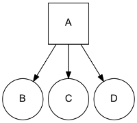
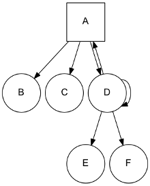
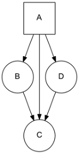
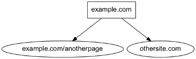

Graph Manager¶
The Graph Manager is a tool to represent web sitemaps as a graph.
It can easily be used to test frontiers. We can “fake” crawler request/responses by querying pages to the graph manager, and also know the links extracted for each one without using a crawler at all. You can make your own fake tests or use the Frontier Tester tool.
You can use it by defining your own sites for testing or use the Scrapy Recorder to record crawlings that can be reproduced later.
Defining a Site Graph¶
Pages from a web site and its links can be easily defined as a directed graph, where each node represents a page and the edges the links between them.
Let’s use a really simple site representation with a starting page A that have links inside to tree pages B, C, D. We can represent the site with this graph:
{kind=link}
We use a list to represent the different site pages and one tuple to define the page and its links, for the previous example:
site = [
('A', ['B', 'C', 'D']),
]
Note that we don’t need to define pages without links, but we can also use it as a valid representation:
site = [
('A', ['B', 'C', 'D']),
('B', []),
('C', []),
('D', []),
]
A more complex site:
{kind=link}
Can be represented as:
site = [
('A', ['B', 'C', 'D']),
('D', ['A', 'D', 'E', 'F']),
]
Note that D is linking to itself and to his parent A.
In the same way, a page can have several parents:
{kind=link}
site = [
('A', ['B', 'C', 'D']),
('B', ['C']),
('D', ['C']),
]
In order to simplify examples we’re not using urls for page representation, but of course urls are the intended use for site graphs:
{kind=link}
site = [
('http://example.com', ['http://example.com/anotherpage', 'http://othersite.com']),
]
Using the Graph Manager¶
Once we have defined our site represented as a graph, we can start using it with the Graph Manager.
We must first create our graph manager:
>>> from new_frontera.utils import graphs
>>> g = graphs.Manager()
And add the site using the add_site method:
>>> site = [('A', ['B', 'C', 'D'])]
>>> g.add_site(site)
The manager is now initialized and ready to be used.
We can get all the pages in the graph:
>>> g.pages
[<1:A*>, <2:B>, <3:C>, <4:D>]
Asterisk represents that the page is a seed, if we want to get just the seeds of the site graph:
>>> g.seeds
[<1:A*>]
We can get individual pages using get_page, if a page does not exists None is returned
>>> g.get_page('A')
<1:A*>
>>> g.get_page('F')
None
CrawlPage objects¶
Pages are represented as a CrawlPage object:
- class CrawlPage¶
A
CrawlPageobject represents an Graph Manager page, which is usually generated in the Graph Manager.- id¶
Autonumeric page id.
- url¶
The url of the page.
- status¶
Represents the HTTP code status of the page.
- is_seed¶
Boolean value indicating if the page is seed or not.
- links¶
List of pages the current page links to.
- referers¶
List of pages that link to the current page.
In our example:
>>> p = g.get_page('A')
>>> p.id
1
>>> p.url
u'A'
>>> p.status # defaults to 200
u'200'
>>> p.is_seed
True
>>> p.links
[<2:B>, <3:C>, <4:D>]
>>> p.referers # No referers for A
[]
>>> g.get_page('B').referers # referers for B
[<1:A*>]
Adding pages and Links¶
Site graphs can be also defined adding pages and links individually, the same graph from our example can be defined this way:
>>> g = graphs.Manager()
>>> a = g.add_page(url='A', is_seed=True)
>>> b = g.add_link(page=a, url='B')
>>> c = g.add_link(page=a, url='C')
>>> d = g.add_link(page=a, url='D')
add_page and add_link can be combined with add_site and used anytime:
>>> site = [('A', ['B', 'C', 'D'])]
>>> g = graphs.Manager()
>>> g.add_site(site)
>>> d = g.get_page('D')
>>> g.add_link(d, 'E')
Adding multiple sites¶
Multiple sites can be added to the manager:
>>> site1 = [('A1', ['B1', 'C1', 'D1'])]
>>> site2 = [('A2', ['B2', 'C2', 'D2'])]
>>> g = graphs.Manager()
>>> g.add_site(site1)
>>> g.add_site(site2)
>>> g.pages
[<1:A1*>, <2:B1>, <3:C1>, <4:D1>, <5:A2*>, <6:B2>, <7:C2>, <8:D2>]
>>> g.seeds
[<1:A1*>, <5:A2*>]
Or as a list of sites with add_site_list method:
>>> site_list = [
[('A1', ['B1', 'C1', 'D1'])],
[('A2', ['B2', 'C2', 'D2'])],
]
>>> g = graphs.Manager()
>>> g.add_site_list(site_list)
Graphs Database¶
Graph Manager uses SQLAlchemy to store and represent graphs.
By default it uses an in-memory SQLite database as a storage engine, but any databases supported by SQLAlchemy can be used.
An example using SQLite:
>>> g = graphs.Manager(engine='sqlite:///graph.db')
Changes are committed with every new add by default, graphs can be loaded later:
>>> graph = graphs.Manager(engine='sqlite:///graph.db')
>>> graph.add_site(('A', []))
>>> another_graph = graphs.Manager(engine='sqlite:///graph.db')
>>> another_graph.pages
[<1:A1*>]
A database content reset can be done using clear_content parameter:
>>> g = graphs.Manager(engine='sqlite:///graph.db', clear_content=True)
Using graphs with status codes¶
In order to recreate/simulate crawling using graphs, HTTP response codes can be defined for each page.
Example for a 404 error:
>>> g = graphs.Manager()
>>> g.add_page(url='A', status=404)
Status codes can be defined for sites in the following way using a list of tuples:
>>> site_with_status_codes = [
((200, "A"), ["B", "C"]),
((404, "B"), ["D", "E"]),
((500, "C"), ["F", "G"]),
]
>>> g = graphs.Manager()
>>> g.add_site(site_with_status_codes)
Default status code value is 200 for new pages.
A simple crawl faking example¶
Frontier tests can better be done using the Frontier Tester tool, but here’s an example of how fake a crawl with a frontier:
from new_frontera import FrontierManager, Request, Response
from new_frontera.utils import graphs
if __name__ == '__main__':
# Load graph from existing database
graph = graphs.Manager('sqlite:///graph.db')
# Create frontier from default settings
frontier = FrontierManager.from_settings()
# Create and add seeds
seeds = [Request(seed.url) for seed in graph.seeds]
frontier.add_seeds(seeds)
# Get next requests
next_requets = frontier.get_next_requests()
# Crawl pages
while (next_requests):
for request in next_requests:
# Fake page crawling
crawled_page = graph.get_page(request.url)
# Create response
response = Response(url=crawled_page.url, status_code=crawled_page.status)
# Update Page
page = frontier.page_crawled(response=response
links=[link.url for link in crawled_page.links])
# Get next requests
next_requets = frontier.get_next_requests()
Rendering graphs¶
Graphs can be rendered to png files:
>>> g.render(filename='graph.png', label='A simple Graph')
Rendering graphs uses pydot, a Python interface to Graphviz’s Dot language.
How to use it¶
Graph Manager can be used to test frontiers in conjunction with Frontier Tester and also with Scrapy Recordings.